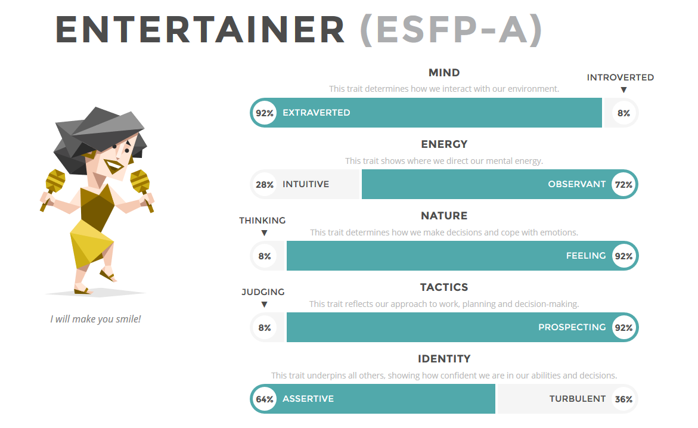

Ben Kimim ?
Ben Recep Taha Topal. 2002 Haziran'da doğdum.
İlgilendiğim birçok alan oldu fakat robotik takımına girmem sayesinde devam etmek istediğim alanın mühendislik üzerine olduğunu fark ettim.
Genel olarak mutlu, enerjik birisiyim. Gülmeyi, güldürmeyi, dinlemeyi ve genel olarak insanlarla bir şeyler paylaşmayı çok severim.
Beni pek özetlemese de davranışlarımı genel olarak özetleyen bir analiz:16personalities.com Karakter Analizi

Eğitim
-
Atatürk Ortaokulu
16' -
Kabataş Erkek Lisesi
21'
Yetenekler
- Fusion360, Solidworks
- Patates oymak, tahta kesmek, kaybolmak.
Yapmak İstediklerim
- Eğlenmek, mühendisliğin tüm alanları hakkında bilgi sahibi olmak.
- Çalışmak, yapacak bir işe sahip olmak.